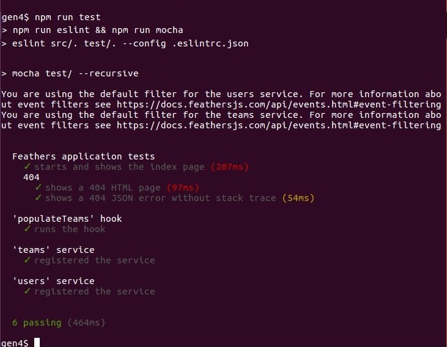

Run the generated application
Now we are good to run the automated tests for our application and start the server.
Run the tests
The generator wrote some basic tests for what it generated. Let's run them.

npm run test runs the test script in
package.json.
"scripts": {
"test": "npm run eslint && npm run mocha",
"eslint": "eslint src/. test/. --config .eslintrc.json",
"start": "node src/",
"mocha": "mocha test/ --recursive"
}
First ESLint runs, using the options in .eslintrc.json.
ESLint checks the syntax and basic coding patterns of the modules in src/ and test/.
Any informatory messages would be logged to the console and the processing terminated.
Next the tests themselves are run. They were written in Mocha and use Mocha's default options. Each test logs to the console as it runs. The summary shows that 6 tests were successful and there were no failures.
So we can now be sure that:
- The generated code follows established best-practices for syntax and basic coding patterns.
- The generated code is wired together properly.
Start the server
Since everything looks OK, let's start the server.

The info line indicates the server for our roughed out app started properly.
The You are using the default filter for ... lines are interesting.
They are logged from
here
and here.
Feathers real-time events will notify all WebSocket clients of mutations occurring in Feathers DB services. You may want to filter who gets to see which events.
These messages are logged just to remind you to do so.
About the config files
We changed to the generated app's directory (gen4) to start the server.
Its nice to use npm run start as then we don't need to know where the server starting code resides.
However we could just as easily have run node ./src.
One thing the generated code assumes is that the
config directory
is located in the current directory.
So we wouldn't be able to start the server with node path/to/app/src
because the config files wouldn't be found.
You can get around this by explicitly providing the direct or relative path of the configuration directory:
# Linux, Mac
NODE_CONFIG_DIR=path/to/app/config node path/to/app/src
# Windows
SET NODE_CONFIG_DIR=path/to/app/config
node path/to/app/src
What's next?
The Feathers generators are great for roughing out a project, creating something in its approximate, but not finished, form.
Generators. You can also use them later on to add additional services and hooks as your app evolves.
We now have the boilerplate for our app, and we start adding the custom code it requires.
We've learned how the generator works, and we understand the code it produces. Let's now use this knowledge to build a Chat Application.